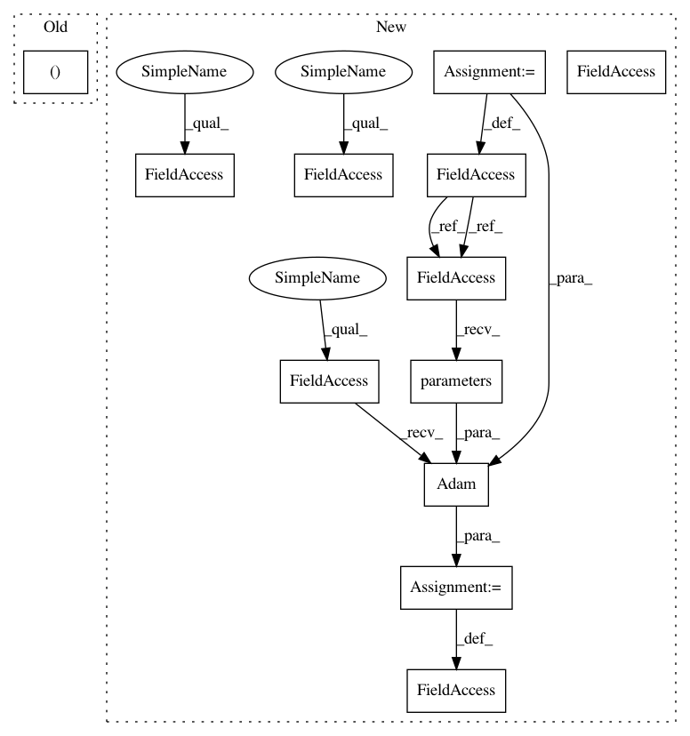

7be56405f2af0f700763249da3c368976582d792,examples/tgn.py,,,#,44
Before Change
sampler = NeighborSampler(data, size=10)
train_data, val_data, test_data = data.train_val_test_split(
val_ratio=0.15, test_ratio=0.15)
After Change
memory_dim = time_dim = embedding_dim = 100
memory = TGNMemory(
data.num_nodes,
data.msg.size(-1),
memory_dim,
time_dim,
message_module=IdentityMessage(data.msg.size(-1), memory_dim, time_dim),
aggregator_module=LastAggregator(),
).to(device)
gnn = GraphAttentionEmbedding(
in_channels=memory_dim,
out_channels=embedding_dim,
msg_dim=data.msg.size(-1),
time_enc=memory.time_enc,
).to(device)
link_pred = LinkPredictor(in_channels=embedding_dim).to(device)
optimizer = torch.optim.Adam(
set(memory.parameters()) | set(gnn.parameters())
| set(link_pred.parameters()), lr=0.0001)
criterion = torch.nn.BCEWithLogitsLoss()
// Helper vector to map global node indices to local ones.
assoc = torch.empty(data.num_nodes, dtype=torch.long, device=device)
def train():
In pattern: SUPERPATTERN
Frequency: 3
Non-data size: 12
Instances
Project Name: rusty1s/pytorch_geometric
Commit Name: 7be56405f2af0f700763249da3c368976582d792
Time: 2020-12-07
Author: matthias.fey@tu-dortmund.de
File Name: examples/tgn.py
Class Name:
Method Name:
Project Name: catalyst-team/catalyst
Commit Name: 2775c15702fd52f081ff8fded51f4f38877659df
Time: 2019-08-01
Author: scitator@gmail.com
File Name: examples/_tests_scripts/z_classification.py
Class Name:
Method Name:
Project Name: rusty1s/pytorch_geometric
Commit Name: 7be56405f2af0f700763249da3c368976582d792
Time: 2020-12-07
Author: matthias.fey@tu-dortmund.de
File Name: examples/tgn.py
Class Name:
Method Name: